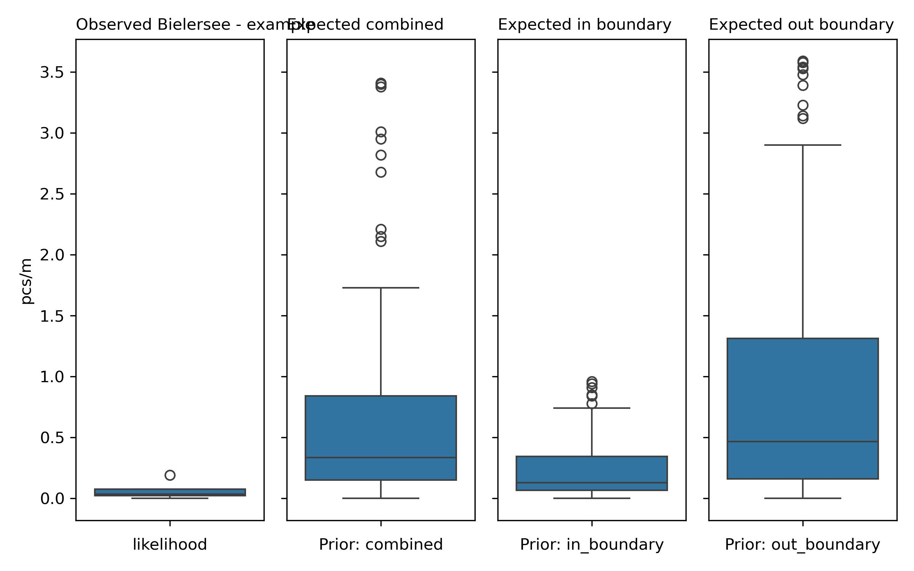

Bern city - example city#
Summary and analysis of observations of trash density: objects related to tobacco and food and drink found in lakes and rivers. Report number: Bielersee - example city 2020-01-01 2021-05-31
Proof of concept: llm assissted reporting grid forecasting example
Executive Summary#
The report on trash density observations includes data from Bern, the only city surveyed, within the canton of Bern, and the Aare survey area. The sampling period covered from May 13, 2020, to November 5, 2020, and yielded a total of four samples. The average trash density was 0.07 pcs/m, with a maximum of 0.19 pcs/m, a median of 0.04 pcs/m, and a standard deviation of 0.07 pcs/m. A total of 10 objects were identified, with the most common objects being cigarette filters and food wrappers. Cigarette filters had a fail rate of 50%, accounting for 80% of the total objects, while food wrappers had a fail rate of 50%, accounting for 20% of the total.
Sampling stratification categorizes data samples based on the environmental characteristics surrounding survey locations, specifically within a 1,500-meter buffer zone. The stratification revealed a mixed land-use classification, neither predominantly urban nor rural. The sampling stratification table is used to analyze how trash density varies with different land-use features. The “undefined” land-use category in the 40-60% buffer zone had the highest trash density at 0.19 pcs/m, with 5.1% of samples taken from this condition. Conversely, the “forest” category within the 0-20% buffer zone had a trash density of 0.11 pcs/m.
No regression analysis was performed due to insufficient data, so no r² or mean squared error (MSE) metrics were produced. As a result, no conclusions can be drawn regarding the best predictive model or the reliability of predictions based on regression analysis. Consequently, no features of importance could be identified using permutation feature importance or model feature importance, as these analyses were not conducted.
Grid approximation was used to estimate the probability distributions of survey results. This method combined prior observations from similar locations with new data from the specific location of interest. Two priors were used: In Boundary Prior with a similarity threshold of 0.98 and Out Boundary Prior with a similarity threshold of 0.99. The posterior distributions indicated an increase in trash density, with the In Boundary Posterior Average at 0.24 pcs/m and Out Boundary Posterior Average at 0.96 pcs/m, compared to the observed average of 0.07 pcs/m. These results suggest that future observations are likely to show an increase in trash density.
Sample results#
The report includes data from one city, which is Bern, located in the canton of Bern. There is a single survey area, named Aare. The sampling period spans from May 13, 2020, to November 5, 2020. During this period, a total of four samples were collected, yielding an average of 0.07 pcs/m (objects per meter), a median of 0.04 pcs/m, a maximum of 0.19 pcs/m, and a standard deviation of 0.07. The total number of objects identified in the report is 10.
In terms of the most common objects found, the following are the notable items based on quantity:
Cigarette filters - Fail Rate: 50%, Percent of Total: 80%, pcs/m: 0.05, Quantity: 8
Food wrappers; candy, snacks - Fail Rate: 50%, Percent of Total: 20%, pcs/m: 0.01, Quantity: 2
The material composition of the identified objects is exclusively plastic, accounting for 100% of the total.
Sample results frequently asked questions
Frequently asked questions
What were the ten most common items found?
The report identifies the following two objects as the most common based on quantity:
Cigarette filters - Fail Rate: 50%, Percent of Total: 80%
Food wrappers; candy, snacks - Fail Rate: 50%, Percent of Total: 20%
The fail rate is defined as the proportion of samples where at least one of the specified objects was found.
Are these objects found on European beaches? If so, is there any data on how many per 100 m of beach?
Yes, these objects are commonly found on European beaches. According to OSPAR results from 2021, cigarette filters and food wrappers are prevalent. For instance, OSPAR’s 2022 report indicates an average of 21.3 cigarette butts per 100 meters of beach. For further details, please refer to the OSPAR results at this link: OSPAR Beach Litter Results.
What are possible sources of these specific objects?
Possible sources of these specific objects include recreational activities, such as picnicking and smoking in public areas, as well as improper disposal practices by individuals. Cigarette filters often end up on the ground when smokers do not dispose of them properly, while food wrappers are typically generated from takeout food and snacks consumed in parks or along the waterfront.
Which three cities had the highest average pcs/m? Which three had the lowest?
The report only includes data for one city, Bern, which has an average of 0.07 pcs/m. As such, there is insufficient data to identify the three cities with the highest or lowest averages, as no other cities are mentioned in this report.
| location | quantity | pcs/m | buildings | forest | undefined | recreation | public-services | |
|---|---|---|---|---|---|---|---|---|
| 0 | aare_bern_gerberm | 7 | 0,19 | 0,45 | 0,14 | 0,40 | 0,00 | 0,11 |
| 1 | aare_bern_scheurerk | 1 | 0,03 | 0,59 | 0,22 | 0,20 | 0,01 | 0,20 |
| 2 | bern-fahrstrasse | 0 | 0,00 | 0,47 | 0,32 | 0,21 | 0,01 | 0,20 |
| 3 | bern-tiergarten | 2 | 0,04 | 0,73 | 0,17 | 0,09 | 0,05 | 0,06 |
Sampling stratification#
Sampling stratification refers to the process of categorizing data samples based on specific characteristics or conditions present in the environment surrounding the survey locations. In this case, each survey location is surrounded by a buffer zone of 1,500 meters, which is divided according to different land-use features such as buildings, forests, wetlands, and others. The stratification allows researchers to analyze how the density of trash varies based on the characteristics of these land-use features, providing insight into environmental conditions that may influence litter accumulation.
In the sampling stratification and trash density table, the highest pieces of trash per meter (pcs/m) values for the specified categories are found in the “forest” and “undefined” land-use features. For instance, the highest pcs/m for the “forest” category is 0.11, which corresponds to the 0-20% buffer zone. This means that in locations where forests occupy a small proportion of the buffer zone (0-20%), there is an average of 0.11 pieces of trash per meter observed. Similarly, the “undefined” category has a pcs/m value of 0.19, which appears in the 40-60% buffer zone. This indicates that in locations where the land use is not clearly defined and occupies 40-60% of the buffer zone, the average trash density is notably higher at 0.19 pieces per meter.
| Proportion of samples collected | |||||||||
|---|---|---|---|---|---|---|---|---|---|
| buildings | wetlands | forest | public-services | recreation | undefined | streets | vineyards | orchards | |
| proportion of buffer | |||||||||
| 0-20% | none | 100.0% | 50.0% | 75.0% | 100.0% | 50.0% | 50.0% | 100.0% | 100.0% |
| 20-40% | none | none | 50.0% | 25.0% | none | 25.0% | 25.0% | none | none |
| 40-60% | 75.0% | none | none | none | none | 25.0% | none | none | none |
| 60-80% | 25.0% | none | none | none | none | none | none | none | none |
| 80-100% | none | none | none | none | none | none | 25.0% | none | none |
| Pieces of trash per meter | |||||||||
|---|---|---|---|---|---|---|---|---|---|
| buildings | wetlands | forest | public-services | recreation | undefined | streets | vineyards | orchards | |
| proportion of buffer | |||||||||
| 0-20% | none | 0,07 | 0,12 | 0,08 | 0,07 | 0,04 | 0,10 | 0,07 | 0,07 |
| 20-40% | none | none | 0,01 | 0,03 | none | none | 0,03 | none | none |
| 40-60% | 0,07 | none | none | none | none | 0,19 | none | none | none |
| 60-80% | 0,04 | none | none | none | none | none | none | none | none |
| 80-100% | none | none | none | none | none | none | 0,04 | none | none |
Sampling stratification frequently asked questions
Frequently asked questions
1. What does the sampling stratification table tell us?
The sampling stratification table provides detailed insights into the relationship between land-use features and the density of trash present in surveyed areas. For example, in the buildings category, the average pcs/m value is 0.07, which is obtained from the 40-60% buffer zone where buildings occupy this range. This indicates that in areas with a moderate presence of buildings, there is a measurable level of trash density. In contrast, the “undefined” category shows a higher pcs/m value of 0.19 (40-60% buffer zone), suggesting that locations with unclear land use may experience greater litter density. These examples illustrate how trash density varies according to specific land-use characteristics, helping to identify potential areas of concern that may require further investigation or remediation.
2. How can the information in the sampling stratification and trash density table help identify areas of concern?
The information in the sampling stratification and trash density table can serve as a critical tool for identifying areas of concern related to environmental cleanliness and pollution. By highlighting the density of trash in relation to specific land-use features, researchers can pinpoint which types of environments are more susceptible to litter accumulation. For instance, if certain land uses, such as “undefined” areas, show significantly higher pcs/m values, it may indicate a lack of proper waste management or recreational pressure in those locations. This knowledge can inform local authorities and conservation groups, guiding them to implement targeted cleanup efforts or educational programs in areas where litter density is alarmingly high.
3. Under what land-use conditions would a surveyor expect to find the most trash?
Surveyors would expect to find the most trash under conditions where the area is characterized by undefined land use or where buildings are present. For example, the highest pcs/m value observed was 0.19 in the “undefined” category, specifically within the 40-60% buffer zone. Additionally, in areas where buildings occupy 40-60% of the buffer zone, the average pcs/m value is 0.07. These conditions suggest that both undefined land uses and moderate building presence correlate with increased trash density, indicating that these environments may be more prone to littering.
4. Given the results in the sampling stratification table, were these surveys collected in mostly urban environments or forested?
The surveys were collected in a mixed environment, as the criteria for urban and rural classifications were not met. To determine this, we sum the proportions of samples for buildings for the rows 60-80% and 80-100% of the sampling stratification table, which yields a total of 0.25 (60-80%) and 0 (80-100%), resulting in a sum of 0.25, which is less than 50%. For the forest category, the sum for the same rows is 0 (no samples), indicating that it also does not meet the rural criteria. Therefore, the surveyed locations do not fall predominantly into urban or rural categories but are classified as mixed, with the greatest proportion of samples coming from undefined land use conditions.
Linear and ensemble methods#
Cluster analysis, specifically k-means clustering, is a method used to partition a dataset into distinct groups (clusters) based on feature similarity. It aims to minimize the variance within each cluster while maximizing the variance between clusters. The cluster with the highest objects per square meter (pcs/m) could not be identified due to insufficient data for cluster analysis in the Bielersee report. Consequently, the composition of the buildings, forest, and undefined land uses in relation to average proportions of the buffer zone remains unavailable.
Linear regression is a statistical method that models the relationship between a dependent variable and one or more independent variables by fitting a linear equation to observed data. The basic assumptions of linear regression include linearity, independence, homoscedasticity, and normality of residuals. Ensemble regression, on the other hand, combines multiple models to produce a single predictive model. It aims to improve prediction accuracy and robustness by leveraging the strengths of various algorithms. The basic assumptions of ensemble regression include the assumption that the base models are independent and that combining them will yield a better predictive performance.
In the Bielersee report, there was insufficient data for regression analysis, and as such, no r² or mean squared error (MSE) could be calculated. Therefore, no conclusions can be drawn regarding the best model, nor can reliability assessments of predictions be made based on the r² and MSE, as these metrics were not produced.
Linear methods frequently asked questions
Frequently asked questions
1. What were the r² and MSE of each test?
There was insufficient data for a regression analysis, which precluded the calculation of r² and MSE.
2. Given the r² and MSE of the different methods employed, how reliable do you think predictions would be based on these models?
Since no regression analysis was conducted, there are no r² or MSE values to assess the reliability of predictions from these models.
3. Can any conclusions be drawn from these results?
No conclusions can be drawn from the results regarding regression analysis or the predictive models, as there was insufficient data to conduct the analysis.
4. According to the cluster analysis, what is the cluster that has the greatest average pcs/m? What is the distribution of land use values within the cluster?
There was insufficient data for a cluster analysis; therefore, the cluster with the greatest average pcs/m could not be identified, and the distribution of land use values within the cluster remains unavailable.
Forecasts and methods#
A grid approximation is a statistical modeling technique that utilizes a grid-based structure to estimate the probability distributions of survey results. It is constructed by dividing the range of possible values into discrete intervals, or grid points, and calculating the conditional probabilities at each point using prior observations and new data. The process involves creating an inference table, which summarizes the relationships between the prior data (observations from similar locations) and the likelihood (observations from the specific location being analyzed).
An inference table is a structured representation of data that contains prior distributions, likelihoods, and posterior distributions. In Bayesian statistics, a prior is the initial belief about a parameter before observing the data, while a posterior is the updated belief after taking the data into account. In the context of the provided report, the priors used are as follows:
In Boundary Prior: Similarity threshold of 0.98
Out Boundary Prior: Similarity threshold of 0.99
The posterior distributions for each grid approximation are derived by combining the prior and the likelihood data, effectively allowing for more accurate predictions of trash density based on observations.
Comparing the different posterior distributions to the observed results (in pcs/m) reveals the following averages:
Observed Average: 0.07 pcs/m
In Boundary Posterior Average: 0.24 pcs/m
Out Boundary Posterior Average: 0.96 pcs/m
The differences in averages between the observed and posterior distributions are notable:
In Boundary: 0.24 - 0.07 = 0.17 pcs/m
Out Boundary: 0.96 - 0.07 = 0.89 pcs/m
Given these results, an increase in trash density is expected, particularly as the out-boundary posterior average indicates significantly higher trash density levels compared to the observed average.
Taking one sample from the surveyed area, a person may not be likely to notice a significant change because the posterior indicates a higher variability given the standard deviation of the observed and posterior distributions. With two samples, the likelihood of observing a change increases, as averaging two samples would reduce the effects of outliers and provide a clearer estimate of the true trash density.

Grid approximation frequently asked questions
Frequently asked questions
1. Why is grid approximation a reasonable modeling technique given the data?
Grid approximation is reasonable due to the observed data’s non-normal distribution, as evidenced by the difference between the mean (0.07) and the median (0.04) from the summary statistics. The mean being higher than the median suggests a right-skewed distribution, which indicates that there are more low values with a few high outliers. If the data were normally distributed, predictions would be more straightforward, allowing for the application of traditional parametric methods; however, the skewness complicates predictions, making the grid approximation more suitable for estimating probabilities within the observed range.
2. Do you have an example of other fields or domains that use grid approximation or Bayesian methods?
Yes, grid approximation and Bayesian methods are utilized in various fields such as ecology for species distribution modeling, finance for risk assessment, and machine learning for probabilistic inference in classification tasks.
3. If the data is normally distributed, would the predictions from the grid approximation and the predictions from the normal distribution be different? If so, in what way?
Yes, if the data were normally distributed, predictions from grid approximation may differ from those derived from a normal distribution. Specifically, the grid approximation accounts for skewness and non-uniformity in the data, while the normal distribution assumes symmetry around the mean. This could lead to differing estimates of uncertainty and confidence intervals in predictions.
4. What is the difference between grid approximation and linear or ensemble regression?
The primary difference lies in their approach to modeling. Grid approximation focuses on estimating probabilities across discrete intervals based on prior and likelihood data, while linear regression predicts a continuous outcome based on linear relationships between variables. Ensemble regression combines multiple models to improve prediction accuracy, whereas grid approximation does not inherently rely on relationships between independent variables.
5. With which posterior do we expect to find most? The least?
The in-boundary posterior is expected to yield the most observations, as it directly reflects the trash density within the designated boundary. Conversely, the out-boundary posterior, while exhibiting high average values, suggests that observations from outside the boundary will be less frequent due to the geographical separation.
6. If the in-boundary grid approximation predicts an increase or decrease, what does that say about the other samples from within the boundary?
If the in-boundary grid approximation predicts an increase, it indicates that elevated values were likely observed in other locations within the boundary. This suggests a general trend of increased trash density in the region, as the posterior reflects a weighted average of prior data from similar geographic areas.
7. If the out-boundary grid approximation predicts an increase or decrease, what does that say about the other samples from outside of the boundary?
An increase predicted by the out-boundary grid approximation implies that elevated values were likely observed in locations outside of the designated boundary. This suggests that external regions may have higher trash density levels, which could inform future monitoring efforts.
8. How different are the expected results from the observed results? Should an increase or decrease be expected?
The expected results from the in-boundary and out-boundary posterior averages (0.24 pcs/m and 0.96 pcs/m, respectively) are significantly higher than the observed average of 0.07 pcs/m. This indicates that an increase in trash density should be expected, especially given the notable differences in averages of 0.17 pcs/m (in-boundary) and 0.89 pcs/m (out-boundary), as well as the standard deviations indicating potential variability in density measurements.
Consolidated results : canton, survey area#
| canton | quantity | pcs/m |
|---|---|---|
| Bern | 10 | 0,07 |
| parent_boundary | quantity | pcs/m |
|---|---|---|
| aare | 10 | 0,07 |
Inventory#
| quantity | pcs/m | % of total | sample_id | fail rate | object |
|---|---|---|---|---|---|
| 8 | 0,05 | 0,80 | 4 | 0,50 | Cigarette filters |
| 2 | 0,01 | 0,20 | 4 | 0,50 | Food wrappers; candy, snacks |